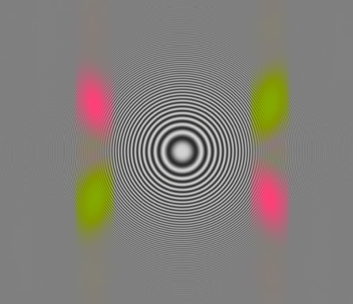
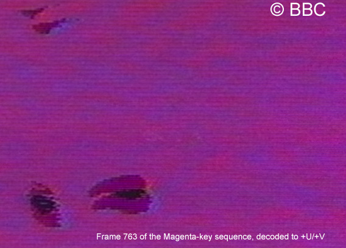
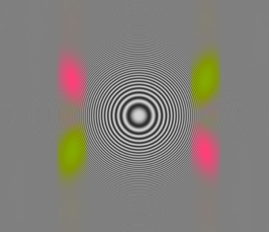
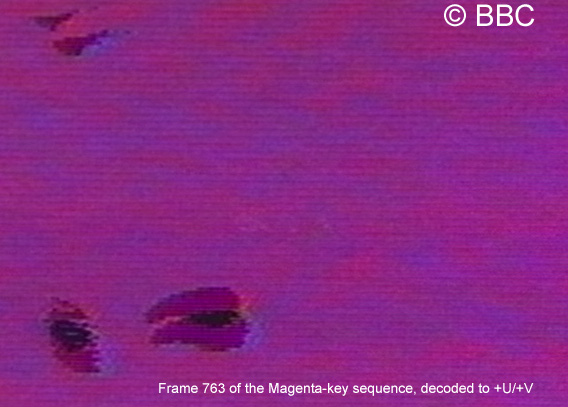

Towards full-gamut - Getting all the other colours back
I've made really good progress with good, clean colour decoding, but have so-far decoded phase-independently, forcing all decoded colours into -U/+V part of the gamut (red/orange/yellow/olive-green).
It is a big step to get the full gamut back, as to do this requires knowing the (reference) polarity of the U and V signals at any given part of the image. In the absence of the PAL colour "burst" and in the presence of geometric distortions in the image, this is not trivial. There may even be some luminance-dependent changes to the geometry ("EHT breathing") - it doesn't look too bad, but may still complicate the issue.
To recap present situation:
present decoding treats frames in complete isolation
individual frames are very acceptable (allowing for -U/+V forcing)
present colours are weak at the left hand side of the image. This is caused by geometric distortion (stretching) taking the colour out-of-band. This would be fairly easy to fix, but is not my top priority. It will probably get addressed as part of the full-gamut solution.
the very top few lines of the picture is missing one field, and the colour-effect of image distortions in the extreme top-left are probably not fully recoverable.
still some unexplained hue distortion, specifically the orange square and Jimmy's face coming out a bit too red. Possibly related to below-black clipping of the chroma signal...? This explanation may be plausable for the orange square, less-so for the skin-tones.
there is notable saturation fluctuation between frames (mostly affecting orange/red/pink) - cause currently under investigation, but in worst case could be masked by post-processing anyway
there is some (mostly vertical) film-judder in the image
Wonder whether the hue-distortion and inter-frame saturation-fluctuation are related. Alex suggests a connection with scanning/aliassing of the vertical chroma structure. I'm unconvinced because (1) I'm filtering over the 15 (HD)-line beat structure anyway, and (2) if this were a problem I'd expect to see periodic large-scale horizontal banding within individual decoded frames too. The orange-square is also odd in that even the simple luma decoding leaves rows of little black dots behind in the decoded luma.
Wonder whether the block-transform/compression (DCT etc) of the HDCAM is compounding any issues?
I would quite like to fix the hue distortion as I don't presently understand it, and establishing the cause/cure may lead to other improvements.
Things to do that are peripheral to full-gamut
Write a short program to open the VT reference material I've been given (and show U/V values)
Possibly write a program to render the VT reference material back to PAL composite, to check chroma levels and "below black" chroma issues
Write a short add-on (or separate program) to give an "oscilloscope view" of the raw HD scanned source material, to look at the chroma waveform and any clipping
Try applying a smooth window-function to my vertical chroma-filter and see if it helps any hue-shift issues, and gives less U-V mixing (and a cleaner recovery of the U/V axis which may aid full-gamut recovery).
Try writing a short routine to use the chroma signal to analyse (and then compensate for) film-judder. This would be cosmetically nice (and may also be useful stabilisation towards full-gamut).
Still pondering whether there's a rough-n-ready hack I can do to get an early "taster" of full-gamut...
Fluctuating saturation...
It has just occurred to me that the origin of the fluctuating saturation from frame to frame is probably due to tiny variations in the precise registration of the two interlace fields. Slight vertical misalignment owing to "EHT breathing" or owing to film stretch/creep during the exposure following the fast-pulldown (expected particularly to affect the top of the frame) will affect the decoded saturation owing to my simple filter mixing the chroma patterns from both fields. By changing the vertical spacing you are effectively changing the relative phasing between the fields, and hence cause more or less constructive or destructive interference. We know that the line structure is variably-visible in the region of Jimmy's face in the first half of the sequence - where the saturation fluctuates. The explanation would also be consistent with Jonathan's observation of saturation-disturbances following major luminance changes.
It may be that some chroma-patterns are more sensitive to this effect than others, also that the eye may be more sensitive to disturbances to some colours than others.
I think this will affect U and V similarly, but I'd have to work it through more carefully to rule out hue shifts.
Depending on the extent of the spot-wobble, a higher resolution scan and scan-line-aware chroma-filtering may help slightly - but probably an empirical post-processing arrangement is a more practical solution.
Andrew Steer - 10 May 2008
Still here!
I've not given up or gone away. I'm still hoping to work on a robust full-gamut colour-recovery method.
With the good weather and a lot of other things on my plate at the moment, I'm just having a temporary slowdown!
I'm also catching up on lost sleep.
I hope to bring more results in due course...
Andrew Steer - 25 May 2008
Improved vertical chrominance-separation filter
I've now modified my vertical filter, going from the 15-line rectangular-window filter to a 30-line raised-cosine window with 15-line FWHM.
On the zoneplate this has given much improved U/V separation, and on decoding Richard's synthetic testcard J it also greatly reduces the cross-colour on the frequency-gratings. For the time being I'm still remaining with a field-unaware filter (and a broader vertical bandwidth than Richard is using). This could be changed/optimised in future if required.
Unfortunately the first implementation of improved vertical-filter has slowed down my decoding... but (within reason) optimisation is something that can be done later. I'm most interested in testing out ideas and proving concepts for now.
The improved filter has also cleaned up the decoded U component in the presence of a strong V component... which is a prerequisite for my planned geometry-recovery algorithms which in turn are a prerequisite for my proposed full-gamut approach.

Chroma filter (25 May 2008) following conversion to raised-cosine vertical filter window.
It may not be optimal, but U and V are clearly much better separated than before.
The better-behaved filter has also reduced some slight residual colour streaking and Hannover-like bars in the Jimmy image for example... but you'd have to look pretty close to tell the difference!
You can't see it on here, but the full-size zoneplate image reveals that my luminance filter seems to have become more top-hat and less of a notch in horizontal-frequency-space. This might be a side-effect of my modifications for the anti-cross-colour algorithm, but I'm not sure. Resolving that is not my priority right now!
I've also done some tests with notch-filtering 2nd and 3rd Fsc harmonic frequencies from the luminance. This does help remove the post-decoding pixel-dots from the lines of the image where the subcarrier caused the signal to go "below black" - but (especially if intending to downsize to 768x576 anyway) is probably not worth the processing-overhead!

Here's a 1:1 pixel crop from the magenta-sequence (decoding to forced +U,+V, and with 2nd and 3rd Fsc luminance harmonics filtered out).
The slightly darker horizontal lines every 7.5lines vertically are where the chroma signal was strongest. I presume something in the telerecording/CRT or telecine clips or goes non-linear - maybe it's due to a net gamma error?
What I ought to quiz Richard on is why the colour is blotchy magenta-blue rather than smooth.
The blotches seem to be slightly periodic (about 5-6 cycles across the crop shown). It looks like some kind of aliassing/moire, perhaps again due to the undersampling in the vertical direction (given that the original scan-lines are on a slight slope)?
Andrew Steer - 26 May 2008
Image geometry mapping
What I wanted to use the magenta key sequence for was to use the mixed U/V chroma signal to map the image distortions.
This is a central strip of frame 763 from the magenta key sequence, after filtering out "U" (red) and "V" (green).
This kind of approach ought to allow the geometry to be measured with good precision.
Tracking the points where the U and V cross (the yellow diamonds - or equally the black diamonds) horizontally will recover the "horizontal" scan-line tilt.
After compensating for this, we ought to be able to measure the horizontal frequency (effectively the average of the U and V frequencies) to determine the horizontal stretch.
In the immediate term, this much improved frequency reference (changing across the screen) should enable the chroma to be filtered more effectively across the whole picture, giving more constant saturation, especially towards the left of the image (although the blurring will still reduce the saturation somewhat).
I'm hoping we can use an iterative process to lock on to this structure, and map the whole screen using a few magenta frames.
This will generate a "baseline" geometry reference for the whole sequence.
Allowing for the PAL sequence, I'm then hoping to "lock" the decoding of individual frames to this master geometry in order to recover the absolute phase/quadrant.
I'm still not quite sure exactly how I plan to implement all this in detail, but that is the general plan.
Ok, step 1 is to analyse the chroma reference horizontally to produce a table which documents how far (in phase) the chroma signal advances for each pixel across the image. This is effectively horizontal-distortion. Data in this form should be fairly easy to merge from different frames so as to cover the whole screen. A single horizontal sweep from near the screen centre will be a good start though.
Andrew Steer - 05 May 2008
Towards full-gamut - Getting all the other colours back
I've made really good progress with good, clean colour decoding, but have so-far decoded phase-independently, forcing all decoded colours into -U/+V part of the gamut (red/orange/yellow/olive-green).
It is a big step to get the full gamut back, as to do this requires knowing the (reference) polarity of the U and V signals at any given part of the image. In the absence of the PAL colour "burst" and in the presence of geometric distortions in the image, this is not trivial. There may even be some luminance-dependent changes to the geometry ("EHT breathing") - it doesn't look too bad, but may still complicate the issue.
To recap present situation:
Wonder whether the hue-distortion and inter-frame saturation-fluctuation are related. Alex suggests a connection with scanning/aliassing of the vertical chroma structure. I'm unconvinced because (1) I'm filtering over the 15 (HD)-line beat structure anyway, and (2) if this were a problem I'd expect to see periodic large-scale horizontal banding within individual decoded frames too. The orange-square is also odd in that even the simple luma decoding leaves rows of little black dots behind in the decoded luma.
Wonder whether the block-transform/compression (DCT etc) of the HDCAM is compounding any issues?
I would quite like to fix the hue distortion as I don't presently understand it, and establishing the cause/cure may lead to other improvements.
Things to do that are peripheral to full-gamut
Still pondering whether there's a rough-n-ready hack I can do to get an early "taster" of full-gamut...
Fluctuating saturation...
It has just occurred to me that the origin of the fluctuating saturation from frame to frame is probably due to tiny variations in the precise registration of the two interlace fields. Slight vertical misalignment owing to "EHT breathing" or owing to film stretch/creep during the exposure following the fast-pulldown (expected particularly to affect the top of the frame) will affect the decoded saturation owing to my simple filter mixing the chroma patterns from both fields. By changing the vertical spacing you are effectively changing the relative phasing between the fields, and hence cause more or less constructive or destructive interference. We know that the line structure is variably-visible in the region of Jimmy's face in the first half of the sequence - where the saturation fluctuates. The explanation would also be consistent with Jonathan's observation of saturation-disturbances following major luminance changes.
It may be that some chroma-patterns are more sensitive to this effect than others, also that the eye may be more sensitive to disturbances to some colours than others.
I think this will affect U and V similarly, but I'd have to work it through more carefully to rule out hue shifts.
Depending on the extent of the spot-wobble, a higher resolution scan and scan-line-aware chroma-filtering may help slightly - but probably an empirical post-processing arrangement is a more practical solution.
Andrew Steer - 10 May 2008
Still here!
I've not given up or gone away. I'm still hoping to work on a robust full-gamut colour-recovery method.
With the good weather and a lot of other things on my plate at the moment, I'm just having a temporary slowdown!
I'm also catching up on lost sleep.
I hope to bring more results in due course...
Andrew Steer - 25 May 2008
Improved vertical chrominance-separation filter
I've now modified my vertical filter, going from the 15-line rectangular-window filter to a 30-line raised-cosine window with 15-line FWHM.
On the zoneplate this has given much improved U/V separation, and on decoding Richard's synthetic testcard J it also greatly reduces the cross-colour on the frequency-gratings. For the time being I'm still remaining with a field-unaware filter (and a broader vertical bandwidth than Richard is using). This could be changed/optimised in future if required.
Unfortunately the first implementation of improved vertical-filter has slowed down my decoding... but (within reason) optimisation is something that can be done later. I'm most interested in testing out ideas and proving concepts for now.
The improved filter has also cleaned up the decoded U component in the presence of a strong V component... which is a prerequisite for my planned geometry-recovery algorithms which in turn are a prerequisite for my proposed full-gamut approach.

Chroma filter (25 May 2008) following conversion to raised-cosine vertical filter window.
It may not be optimal, but U and V are clearly much better separated than before.
The better-behaved filter has also reduced some slight residual colour streaking and Hannover-like bars in the Jimmy image for example... but you'd have to look pretty close to tell the difference!
You can't see it on here, but the full-size zoneplate image reveals that my luminance filter seems to have become more top-hat and less of a notch in horizontal-frequency-space. This might be a side-effect of my modifications for the anti-cross-colour algorithm, but I'm not sure. Resolving that is not my priority right now!
I've also done some tests with notch-filtering 2nd and 3rd Fsc harmonic frequencies from the luminance. This does help remove the post-decoding pixel-dots from the lines of the image where the subcarrier caused the signal to go "below black" - but (especially if intending to downsize to 768x576 anyway) is probably not worth the processing-overhead!

Here's a 1:1 pixel crop from the magenta-sequence (decoding to forced +U,+V, and with 2nd and 3rd Fsc luminance harmonics filtered out).
The slightly darker horizontal lines every 7.5lines vertically are where the chroma signal was strongest. I presume something in the telerecording/CRT or telecine clips or goes non-linear - maybe it's due to a net gamma error?
What I ought to quiz Richard on is why the colour is blotchy magenta-blue rather than smooth.
The blotches seem to be slightly periodic (about 5-6 cycles across the crop shown). It looks like some kind of aliassing/moire, perhaps again due to the undersampling in the vertical direction (given that the original scan-lines are on a slight slope)?
Andrew Steer - 26 May 2008
Image geometry mapping
What I wanted to use the magenta key sequence for was to use the mixed U/V chroma signal to map the image distortions.
This is a central strip of frame 763 from the magenta key sequence, after filtering out "U" (red) and "V" (green).
This kind of approach ought to allow the geometry to be measured with good precision.
Tracking the points where the U and V cross (the yellow diamonds - or equally the black diamonds) horizontally will recover the "horizontal" scan-line tilt.
After compensating for this, we ought to be able to measure the horizontal frequency (effectively the average of the U and V frequencies) to determine the horizontal stretch.
In the immediate term, this much improved frequency reference (changing across the screen) should enable the chroma to be filtered more effectively across the whole picture, giving more constant saturation, especially towards the left of the image (although the blurring will still reduce the saturation somewhat).
I'm hoping we can use an iterative process to lock on to this structure, and map the whole screen using a few magenta frames.
This will generate a "baseline" geometry reference for the whole sequence.
Allowing for the PAL sequence, I'm then hoping to "lock" the decoding of individual frames to this master geometry in order to recover the absolute phase/quadrant.
I'm still not quite sure exactly how I plan to implement all this in detail, but that is the general plan.
Ok, step 1 is to analyse the chroma reference horizontally to produce a table which documents how far (in phase) the chroma signal advances for each pixel across the image. This is effectively horizontal-distortion. Data in this form should be fairly easy to merge from different frames so as to cover the whole screen. A single horizontal sweep from near the screen centre will be a good start though.